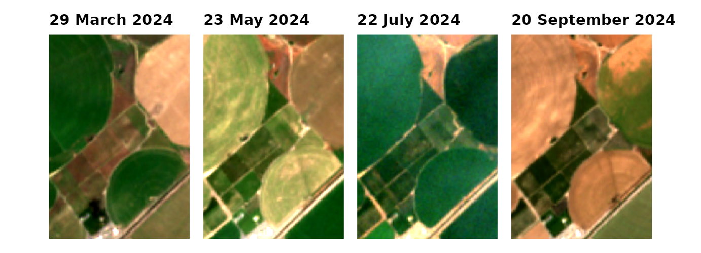
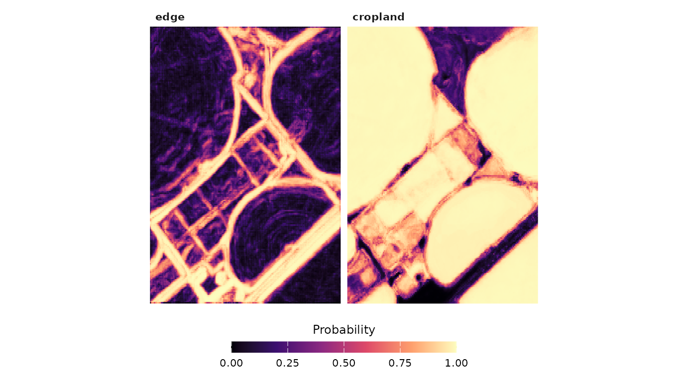
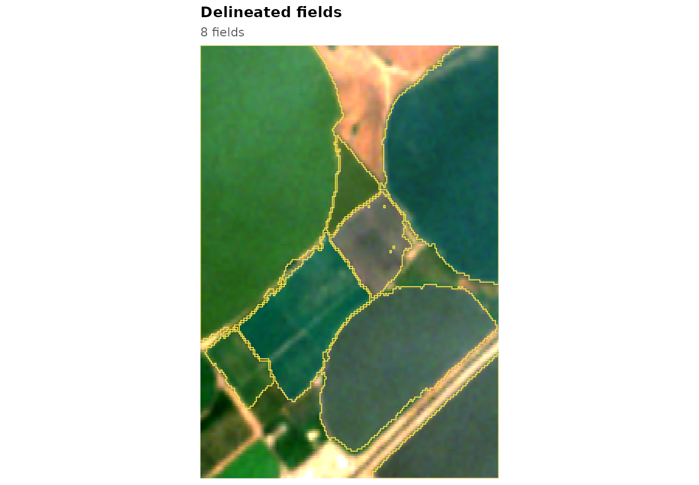
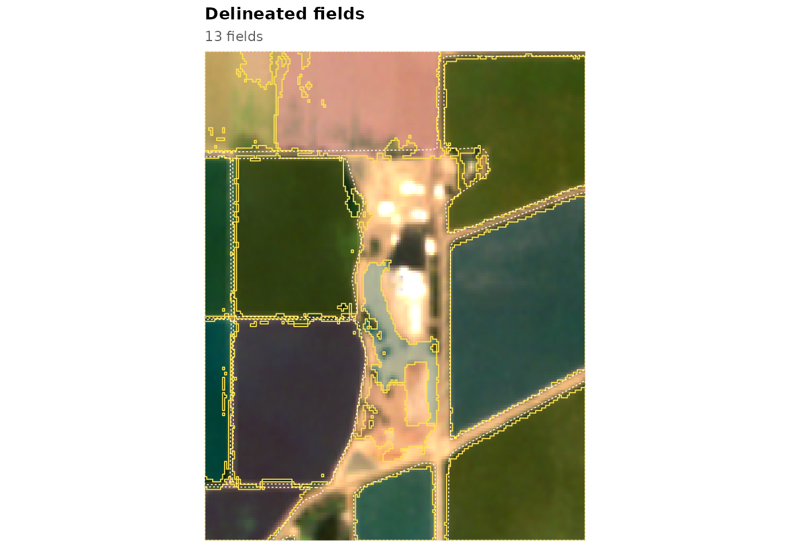
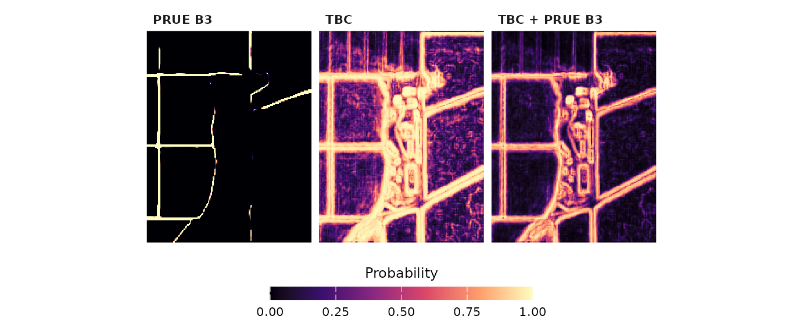
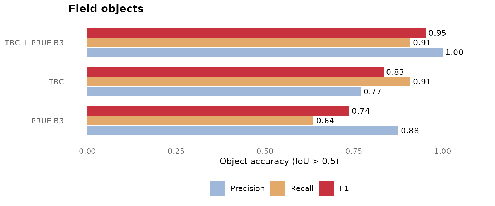

A field border is often hard to see in one satellite image: two
fields of the same crop can look alike on any given day. Over a season
the border becomes obvious, because neighbouring fields are sown,
irrigated, cut and harvested at different times. The temporal
boundary contrast (TBC) method in fieldborders
uses this. For pairs of pixels on either side of a known border and
pairs inside one field, it measures how differently every band and
normalised difference changes between the two pixels over a year of
monthly Sentinel-2 images, ranks the features by how well this contrast
separates the two kinds of pairs, and learns from the best of them:
- an edge map, the probability that a pixel lies on a border between two fields, and
- a cropland map, the probability that a pixel belongs to a field at all.
Field objects are then grown from seeds inside fields by a marker-controlled watershed on the edge map. The maps can be fused with the output of a deep segmentation model, and the result is scored with the object metric of the Fields of The World (FTW) benchmark.
A Sentinel-2 time series
The package ships four small windows (about 1 km across) of monthly Sentinel-2 scenes, ten bands each, on the FTW grid of about 5 m. This one is in the Columbia Basin of Washington, with centre-pivot and rectangular irrigated fields:
s <- fb_example_stack("washington")
s
#> <fb_stack> 192 x 192 pixels, 11 dates, 10 bands
#> dates : 2024-01-14 to 2024-12-09
#> bands : B02, B03, B04, B05, B06, B07, B08, B8A, B11, B12
#> scale : 10000
#> crs : WGS 84
#> clear : 100% 100% 100% 100% 100% 100% 100% 100% 100% 100% 100%
months <- c(3, 5, 7, 9)
wrap_plots(lapply(months, function(k) fb_plot_rgb(s, date = k) + labs(subtitle = NULL)), nrow = 1)
Your own images enter the same way through
fb_read_stack() (one multi-band file per date) or
fb_stack() (a SpatRaster), and
fb_s2_monthly() downloads a monthly series for any area
(see vignette("new-area")).
Edge and cropland maps
fb_model_pretrained() returns models fitted on reference
fields in California and Washington. fb_tbc_maps() applies
a model to a stack:
m <- fb_model_pretrained("general")
m
#> <fb_model> temporal boundary contrast
#> bands : B02, B03, B04, B05, B06, B07, B08, B8A, B11, B12
#> edge features : ND(B03,B08) | ND(B02,B07) | B04 | ND(B04,B11) | ND(B03,B11) | ND(B08,B11) | B08 | ND(B02,B05)
#> cropland learner : xgboost
#> training : 75 tiles, 467,670 pairs (167,670 across), 1,470,140 pixels
#> in-sample AUC : edge 0.902, cropland 0.968
#> thresholds : t_edge 0.60, t_field 0.30, min_size 400 pixels
maps <- fb_tbc_maps(s, m)
fb_plot_maps(maps)
From maps to fields
fb_delineate() turns the maps into field objects, with
the thresholds that were tuned for the model on separate reference
tiles:
m$thresholds
#> $t_edge
#> [1] 0.6
#>
#> $t_field
#> [1] 0.3
#>
#> $min_size
#> [1] 400
#>
#> $min_area
#> [1] 10940
fields <- fb_delineate(maps, thresholds = m$thresholds)
fb_plot_fields(fields, s, date = 7)
fb_polygons() converts the objects to an sf
data frame with the area, perimeter, compactness and mean map values of
each field, ready to be written to any vector format:
p <- fb_polygons(fields, maps)
head(p)
#> Simple feature collection with 6 features and 6 fields
#> Geometry type: POLYGON
#> Dimension: XY
#> Bounding box: xmin: -119.1713 ymin: 46.53552 xmax: -119.161 ymax: 46.54525
#> Geodetic CRS: WGS 84
#> field_id area_ha perimeter_m compactness mean_edge mean_cropland
#> 1 1 23.211101 2571.4177 0.4411237 0.2024311 0.9759057
#> 2 4 1.933387 873.2404 0.3186112 0.5731383 0.8261993
#> 3 8 7.236378 1645.0143 0.3360406 0.3947174 0.9262362
#> 4 12 12.161893 1993.7818 0.3844641 0.2700907 0.9477701
#> 5 13 1.585351 863.4161 0.2672360 0.4966539 0.9203941
#> 6 14 3.386969 1124.9640 0.3363132 0.4967495 0.8474157
#> geometry
#> 1 POLYGON ((-119.1713 46.5452...
#> 2 POLYGON ((-119.1702 46.5384...
#> 3 POLYGON ((-119.167 46.54076...
#> 4 POLYGON ((-119.1636 46.5395...
#> 5 POLYGON ((-119.1666 46.5430...
#> 6 POLYGON ((-119.1651 46.5417...
f <- tempfile(fileext = ".gpkg")
sf::st_write(p, f, quiet = TRUE)fb_fields() runs the same steps in one call.
How good is it?
The California example comes with reference fields from the
California Department of Water Resources. fb_reference()
rasterises them to the image grid (field interior, boundary,
background), and fb_evaluate() matches delineated and
reference fields one to one at an intersection over union above 0.5, as
in the FTW benchmark:
s_ca <- fb_example_stack("california")
f_ca <- fb_example_files("california")
ref_poly <- sf::st_read(f_ca$fields, quiet = TRUE)
ref <- fb_reference(ref_poly, s_ca)
maps_ca <- fb_tbc_maps(s_ca, m)
fields_ca <- fb_delineate(maps_ca, thresholds = m$thresholds)
ev <- fb_evaluate(ref, fields_ca)
fb_accuracy(ev)[, c("reference_fields", "predicted_fields", "obj_precision", "obj_recall", "obj_f1")]
#> reference_fields predicted_fields obj_precision obj_recall obj_f1
#> 1 11 13 0.7692308 0.9090909 0.8333333
fb_plot_fields(fields_ca, s_ca, date = 7, reference = ref_poly)
The dashed white lines are the reference fields. A window this small
holds only a few fields, so these numbers say little about accuracy in
general; vignette("validation") summarises the validation
on several thousand reference fields.
Adding a deep model
Deep segmentation models such as the FTW PRUE models predict, for
every pixel, the probability of background, field interior and field
boundary from two images of the season. fb_prue_predict()
runs PRUE in R (it needs the torch package); the examples
include its output for each window:
dl <- fb_read_probabilities(f_ca$prue)
fu <- fb_model_pretrained("general", "fusion")
fused <- fb_fuse(maps_ca, dl, fu)The fusion combines the deep-model and TBC probabilities with two logistic regressions fitted on reference pixels. The three edge maps side by side:
edges <- c(dl[["boundary"]], maps_ca[["edge"]], fused[["edge"]])
names(edges) <- c("PRUE B3", "TBC", "TBC + PRUE B3")
fb_plot_maps(edges)
and the accuracy of the objects obtained from each, all with the same object procedure (the deep model alone with the thresholds of the fusion):
counts <- rbind(
cbind(method = "PRUE B3", fb_evaluate(ref, fb_delineate(dl, thresholds = fu$thresholds))),
cbind(method = "TBC", fb_evaluate(ref, fields_ca)),
cbind(method = "TBC + PRUE B3", fb_evaluate(ref, fb_delineate(fused, thresholds = fu$thresholds))))
fb_plot_accuracy(fb_accuracy(counts, by = "method"))
Where next
-
vignette("training"): train a model on your own reference fields and choose the features and thresholds. -
vignette("new-area"): download Sentinel-2 for any area and map its fields. -
vignette("gallery"): the pretrained model in six farming regions around the world. -
vignette("validation"): the accuracy measures and the results of the validation.